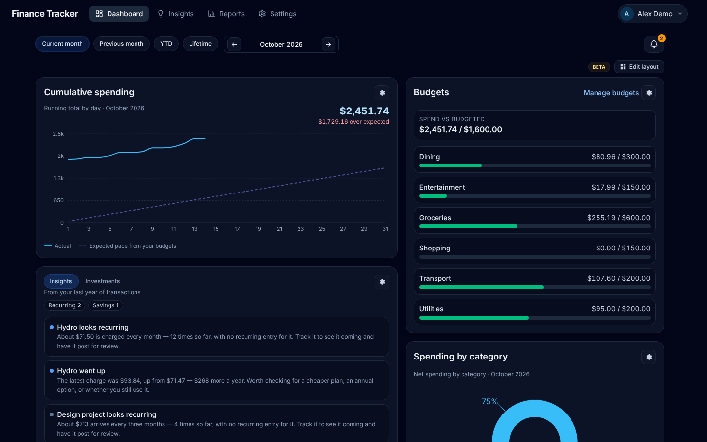
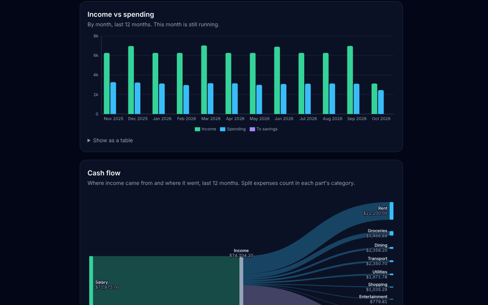
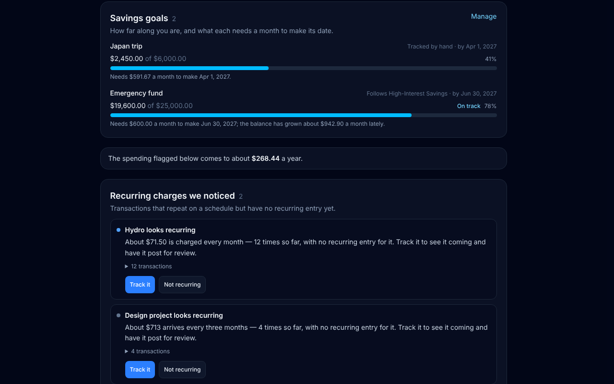
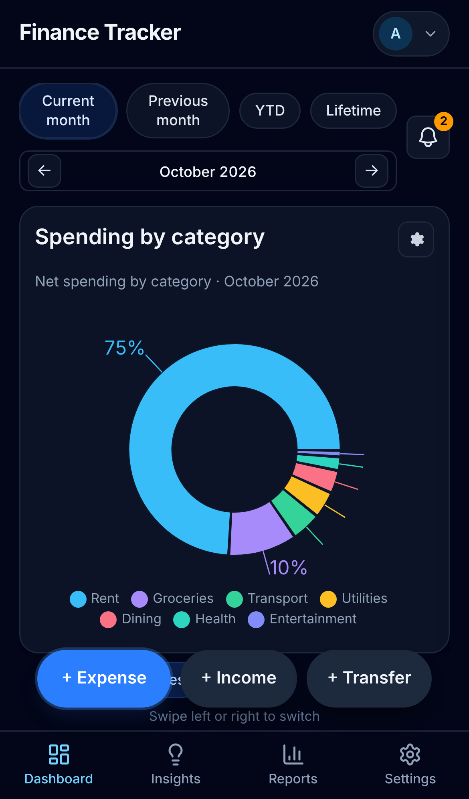

Your money, on your own server.
Finance Tracker keeps your spending, budgets, bills and savings in one place you control. Nothing is posted to your books without you, and nothing leaves your server unless you connect a bank.

Everything a household budget needs
Built for one person or a family, with the details that usually get left out.
Expense and income log
Categories, month, year-to-date and lifetime views, search, notes, receipt breakdowns and CSV import.
Budgets with rollover
A monthly budget per category, with what is left (or overspent) carried into next month if you want it, and email alerts near the limit.
Recurring bills and salary
Rules that post by hand or automatically, and an upcoming-bills forecast for the next 30, 60 or 90 days.
Bank sync you review
Connect banks through Plaid. Synced transactions wait in a review queue and are never posted on their own.
Transfers, tags and splits
Moves between your accounts stay out of income and spending. Tags cut across categories, and rules can add them for you.
Money owed to you
Mark part of an expense as someone else's share, keep it out of your spending, and track it until it is paid back.
Savings goals and net worth
Goals with a target date and what each needs a month, account balances over time, and projected balances.
Investments and contribution room
TFSA, RRSP and FHSA room tracking, with a warning before you go over.
Reports and insights
Income against spending, a cash-flow diagram, year over year, top payees, a financial score and habits worth a look.
See where it all went
Reports show income against spending by month, what you saved, and how this year compares with last. Transfers between your own accounts are left out so the numbers mean what they say.
- Cash-flow diagram from income to each category
- Top payees, with a page per merchant
- Net worth from your account balances

Insights worked out on your server
Finance Tracker looks over the last year of transactions for recurring charges you have not tracked, categories with no budget, and goals that are falling behind. The analysis runs locally; nothing is sent anywhere.
- Savings goals and what each needs a month
- Recurring charges you have not set up yet
- A 0 to 100 financial score with the factors behind it

Works on your phone
Install it to your home screen like an app. A bottom tab bar and quick-add sheet make logging a coffee take a few seconds.
- Installable web app with offline banner
- Passkeys, two-factor and Google or Authentik sign-in
- Several users per server, each with their own data

Yours to run
Finance Tracker is a single Docker image with SQLite inside. No external database, no account with us, no subscription.
Private by default
Your data lives in one file on your volume. Back it up, restore it, or export each user's data from Settings.
Admin tools included
Roles, signup control, an audit log, schema health checks and a read-only API with personal access tokens.
Open source
Read the code, file an issue, or send a pull request on .